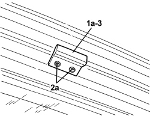
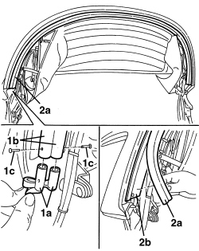

7030H39 HOOD REAR SEAL - R.R.
- Path
- Procedures > 70 FITTINGS > 7030 SUN ROOF/GLASS PANEL > 7030H AUTOMATICALLY OPERATED HOOD > 7030H39 HOOD REAR SEAL - R.R.
- Kind
- repair procedure (removal / refitting; the operation number is the code)
- Applies to
- engines: 2.2 JTS, 3.2 JTS; all production periods
- Interactive page
- https://sloeber94.github.io/elrnDB-aBrrSpdr/en/#/946003672
Applies to: engines: 2.2 JTS, 3.2 JTS; all production periods
 Removing
Removing
 Refitting
Refitting- Prepare the hood for the procedure.
Op. 0010T79 HOOD HYDRAULIC SYSTEM - DISCHARGE AND RESTORE PRESSURE
1. Partly raise the rear section of the hood (using the electric control) until mounting block (1a) can be accessed.
2. Drill out rivets (2a) securing the mounting block (keep the parts of the rivets removed).
3. Keep the rear mounting block.

Applies to: engines: 2.2 JTS, 3.2 JTS; all production periods
1. Working on both sides of the hood, release joins (1a) for the hood fabric from ends (1b) of the rear seal, after having removed retainers (1c).
2. Release rear seal (2a) from its housing (2b).

Applies to: engines: 2.2 JTS, 3.2 JTS; all production periods
Refitting
Removing- Check that the rear seal is not damaged.
- Fit the rear seal in position.
- Engage the hood fabric joins to the ends of the rear seal, then secure them using the retainers, or with a minimum quantity of glue for rubber.
- Check that the rear mounting block is not damaged; if necessary restore any paint that was damaged when the rivets were removed.
- Place the rear mounting block in position and secure it with the rivets.
- Check that the rear seal is correctly positioned on the hood cover.
- Check that the hood is working correctly.